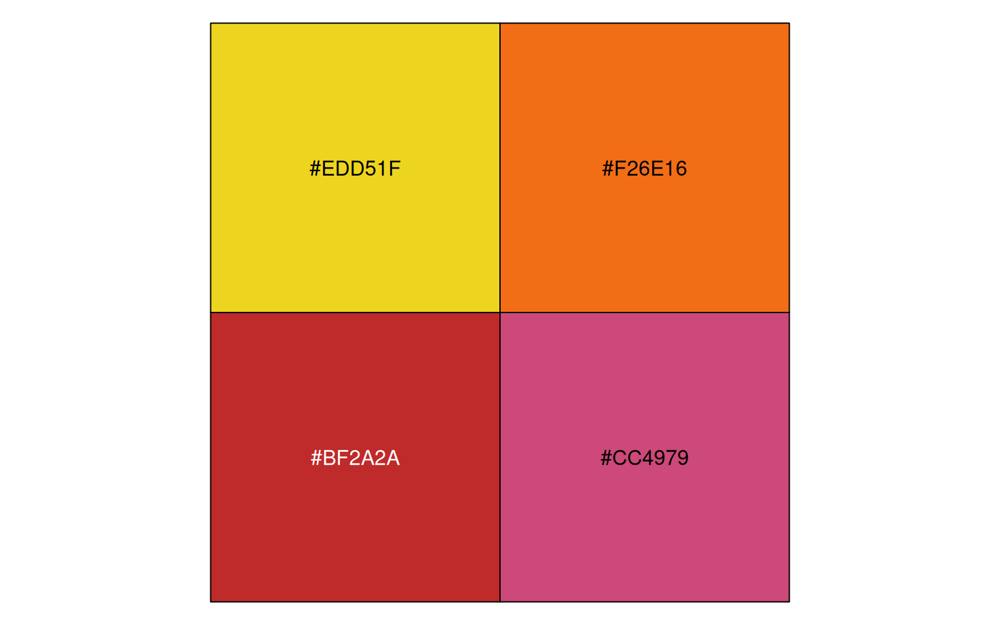
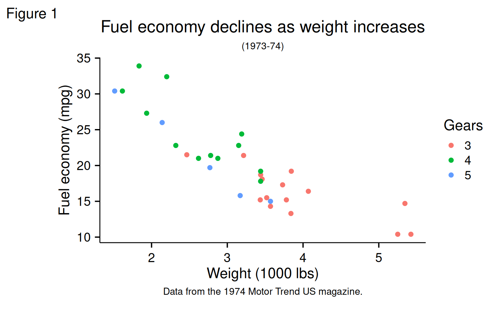
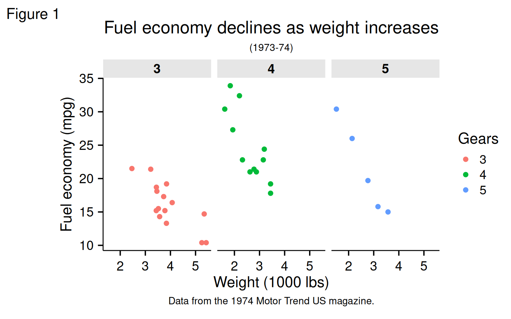
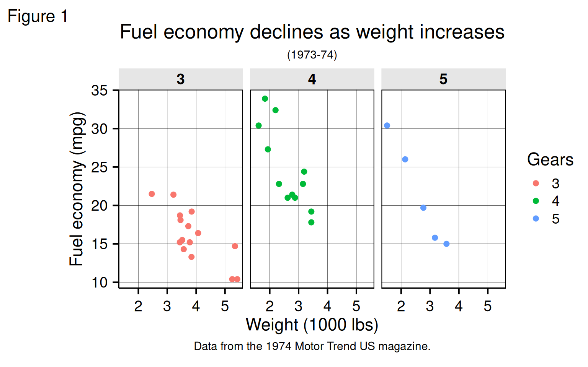

Examples for using `theme_mengbo` when generating ggplots
Mengbo Li
Bioinformatics Division, WEHI2024-05-15
ggthemeML.RmdColour palettes
Available Colour palettes so far:
names(ggthemeML:::mengbo_palettes)
[1] "main" "cool" "hot" "pastel" "light"
[6] "grey" "opposite" "opposite_ordinal" "wehi_full" "wehi_light"
[11] "wehi_dark" "wehi_mix"
show_col(mengbo_pal("main")(8))
show_col(mengbo_pal("cool")(4))
show_col(mengbo_pal("hot")(4))
show_col(mengbo_pal("pastel")(8))
show_col(mengbo_pal("light")(8))
show_col(mengbo_pal("grey")(5))
show_col(mengbo_pal("opposite")(6))
show_col(mengbo_pal("opposite_ordinal")(6))
show_col(mengbo_pal("wehi_full")(9))
show_col(mengbo_pal("wehi_light")(8))
show_col(mengbo_pal("wehi_dark")(8))
show_col(mengbo_pal("wehi_mix")(16))
show_col(mengbo_pal("main")(16))Discrete colour examples
My own ggplot theme modified based on the default ggplot theme
(theme_grey()). Modifications include removing the minor
grids, bigger axis texts, empty panel and legend background and so
on.
Default
mtcars2 <- within(mtcars, {
vs <- factor(vs, labels = c("V-shaped", "Straight"))
am <- factor(am, labels = c("Automatic", "Manual"))
cyl <- factor(cyl)
gear <- factor(gear)
})
p1 <- ggplot(mtcars2) +
geom_point(aes(x = wt, y = mpg, colour = gear)) +
labs(
title = "Fuel economy declines as weight increases",
subtitle = "(1973-74)",
caption = "Data from the 1974 Motor Trend US magazine.",
tag = "Figure 1",
x = "Weight (1000 lbs)",
y = "Fuel economy (mpg)",
colour = "Gears"
)
p1 + theme_mengbo()
p1 + facet_wrap(~ gear) + theme_mengbo()
With my colour palettes:
p1 + scale_color_mengbo("main") + theme_mengbo()Framed figure panel
p1 + theme_mengbo(clean_background = FALSE)
p1 + facet_wrap(~ gear) + theme_mengbo(clean_background = FALSE)
Continuous colour examples
ggplot(iris, aes(Sepal.Width, Sepal.Length, color = Sepal.Length)) +
geom_point(size = 4) +
scale_color_mengbo("main", discrete = FALSE) +
theme_mengbo()
Session information
sessionInfo()
R version 4.4.0 (2024-04-24)
Platform: x86_64-pc-linux-gnu
Running under: Ubuntu 22.04.4 LTS
Matrix products: default
BLAS: /usr/lib/x86_64-linux-gnu/openblas-pthread/libblas.so.3
LAPACK: /usr/lib/x86_64-linux-gnu/openblas-pthread/libopenblasp-r0.3.20.so; LAPACK version 3.10.0
locale:
[1] LC_CTYPE=C.UTF-8 LC_NUMERIC=C LC_TIME=C.UTF-8 LC_COLLATE=C.UTF-8
[5] LC_MONETARY=C.UTF-8 LC_MESSAGES=C.UTF-8 LC_PAPER=C.UTF-8 LC_NAME=C
[9] LC_ADDRESS=C LC_TELEPHONE=C LC_MEASUREMENT=C.UTF-8 LC_IDENTIFICATION=C
time zone: UTC
tzcode source: system (glibc)
attached base packages:
[1] stats graphics grDevices utils datasets methods base
other attached packages:
[1] scales_1.3.0 ggthemeML_1.0.1 colorspace_2.1-0 ggplot2_3.5.1 BiocStyle_2.32.0
loaded via a namespace (and not attached):
[1] gtable_0.3.5 jsonlite_1.8.8 highr_0.10 compiler_4.4.0
[5] BiocManager_1.30.23 jquerylib_0.1.4 systemfonts_1.0.6 textshaping_0.3.7
[9] yaml_2.3.8 fastmap_1.1.1 R6_2.5.1 labeling_0.4.3
[13] knitr_1.46 tibble_3.2.1 bookdown_0.39 desc_1.4.3
[17] munsell_0.5.1 bslib_0.7.0 pillar_1.9.0 rlang_1.1.3
[21] utf8_1.2.4 cachem_1.0.8 xfun_0.43 fs_1.6.4
[25] sass_0.4.9 memoise_2.0.1 cli_3.6.2 withr_3.0.0
[29] pkgdown_2.0.9 magrittr_2.0.3 digest_0.6.35 grid_4.4.0
[33] lifecycle_1.0.4 vctrs_0.6.5 evaluate_0.23 glue_1.7.0
[37] farver_2.1.2 ragg_1.3.1 fansi_1.0.6 rmarkdown_2.26
[41] purrr_1.0.2 tools_4.4.0 pkgconfig_2.0.3 htmltools_0.5.8.1